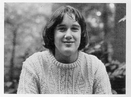

|
|
|
alt-usage-english.org |
| Home |
| Newsgroup |
| Intro Documents A B C D E F G |
| FAQ |
| FAQ Supplement |
| ASCII IPA |
| Audio Archive |
| Links |
| UCLE Corner |
| What's New? |
| Search |
| Site Map Where am I? |
| Contact |
|
|
|
IMPORTANT NOTICE: This site is scheduled for closure in September 2016.
If you have any comments about the closure, please post them to the newsgroup. See this page for information about the newsgroup and how to post to it. The Totally Official Panel |
|
|
| SDC 2000: | << Previous | Contents | Next >> | Bottom |
|
Even though our FAQ advises against making generalisations, sometimes it's expedient to a given explanation. As I have pointed out (successfully or not) at a number of boinks, aue people fall into one of two major categories: [1] the whackos and [2] the civilians. The whackos march to their own drums and we don't need to discuss them here in great detail. The other category, the civilians, encompasses everyone else. Fortunately, the civilians hold a commanding majority in the news group, and accordingly it is from this group that our panellists are drawn. Our panellists are aue civilians who volunteer to administer the SDC, and to participate in the scoring and other panellist activities. In addition, a panellist is likely to be good natured, patient, and sociable. Many panellists have attended aue boinks, symposiums, and what-not. They are civilians with a sense of public spirit. Here's a photo of a panellist from this year's panel...  The panellists are identified at some point in the late spring, and use an email list to communicate during the competition. Panellists are required to empty their kill-files during the course of the competition. Comments from individual panellists are shown below... “I found the role of rulemaker and scorekeeper rather more difficult than I had expected. Some would say it was my own fault for designing such a complex structure for the competition, and of course they'd be Totally Correct. I know from correspondence with my fellow panellists that spotting and judging the right answers was also a tough job, and I'm pleased that by taking care of the score-keeping I have been able to make all their jobs a bit easier. From these two weeks I have gained a profound respect for everyone who had the brains to answer the questions; I've gained new friends among the other panel members; and I've learned a lot more about Microsoft Excel; and I've learned a lot more about sheep.” “It was a totally different experience being on the other side of the fence this SDC. I never had so much email in my life! It was a great success, from my point of view, and it was fascinating to watch the thought processes and unexpected turns. I look forward to the next one, whichever way I participate.” “Talk about mixed emotions and cringing with guilt! At one point I felt the need to drop a hint into a thread to get the train of thought off a Red Herring, and redirected into a more promising direction - before it deteriorated into a complete shambles or died in a miserable dead-end. So with an air of innocence, (Who me? The instigator of the conundrum? Naaah!) I allowed as to how I had found a Google reference which might be of help in finding the answer. My reward was a lovely compliment from Aaron, to wit: "...This is so mind-numbingly obvious in retrospect that I must sincerely congratulate you for thinking of it..." Dang I wish I had earned that accolade! Instead I'm still flushed with guilt. Maybe I can assuage it a little by 'fessing up now.” “Being a Panellist in the SDC meant a lot to me. It was fascinating to wake up in the morning and see how the whole thing had worked its way around the globe. I never knew how difficult it was! My favourite part of the SDC was the run-up, when we did the teasers and set up the aueBC pages. I also liked the way a question was sent from some far off corner of the world and BAM, it was nailed from someone on the frontiers who we never saw before. I especially enjoyed the snappy comebacks and seeing interesting follow-ups to some of the questions. I am happy for the winners, and loved seeing the whole thing come together...” “When I first saw the list of suggested SDC questions, I thought there was no way anyone would get them. I should have known better. This newsgroup is filled with some very smart and resourceful people. More important, aue posters are very honorable, and on top of that, have a wonderful sense of humor. My favorite part of the whole thing was the Teasers, of course. What an enjoyable experience! As for the entire SDC "thingy," it was not only fun, but educational. You can't beat that! And before I close here, I want to thank the others on the panel. They did all the hard work, and proved to be remarkably tolerant of my goofs. I love them all (the panel members, that is, not my goofs).” [Graeme couldn't be on the panel this year, but kindly donated his time to act as our question checker... Ed] “Real Life (TM) prevented me from taking part in the SDC proper, but an odd series of coincidences allowed me to be the Totally Official Sanity Checker for the Totally Official SDC. This involved running through a late draft of the questions, to check on their suitability for the SDC. I was able to answer a few of them, and I made a reasonable stab at some others. The rest were, of course, baffling. The main question I had to answer was "was the set of SDC questions suitable, and did they meet the design goals of being more Englishy and more liable to generate interesting threads?" (ObAUE: note the "was was".) I had to concur that, in the main, the questions met the goals. My description of this was "a curate's egg". This almost spawned another SDC question, until I pointed out that every RightPondian was familiar with that century-old Punch cartoon, and the phrase that derived from it.” Editor's note: The Panel should not be confused with The Committee. These are two entirely different bodies, and there are no known incidents of communication between these two separate entities. We suspect that The Committee has a general awareness of the SDC, but has yet to voice an opinion (in either direction) about us. The Panel regrets any confusion this may have caused. If we hear from The Committee, we'll let you know (and vice-versa). This editor's note has been brought to you by Totally Official dot Com. Have a nice day. |
| SDC 2000: | << Previous | Contents | Next >> | Top |
|